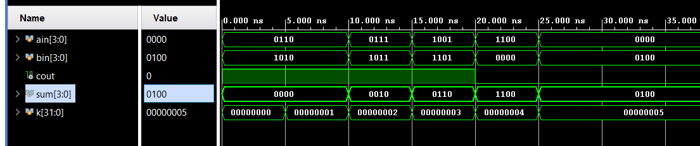
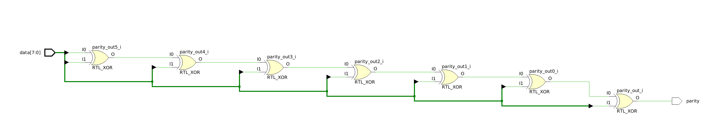
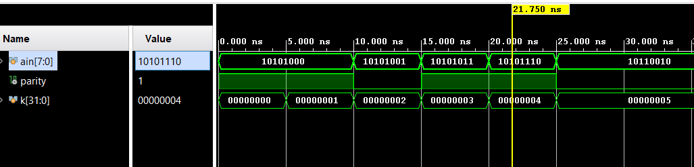
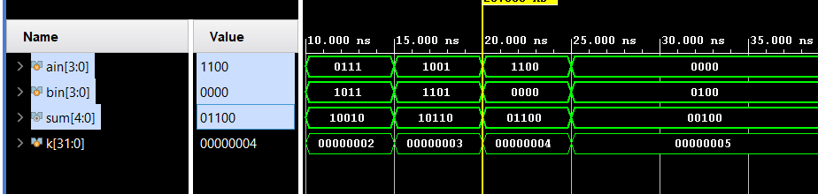
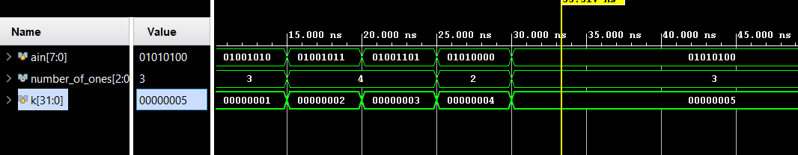
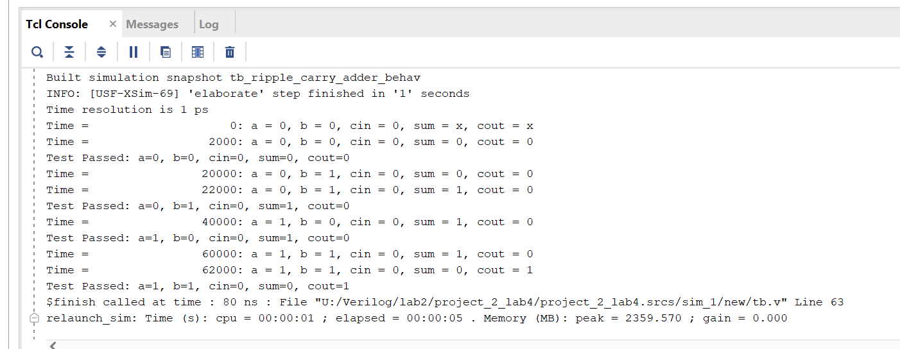
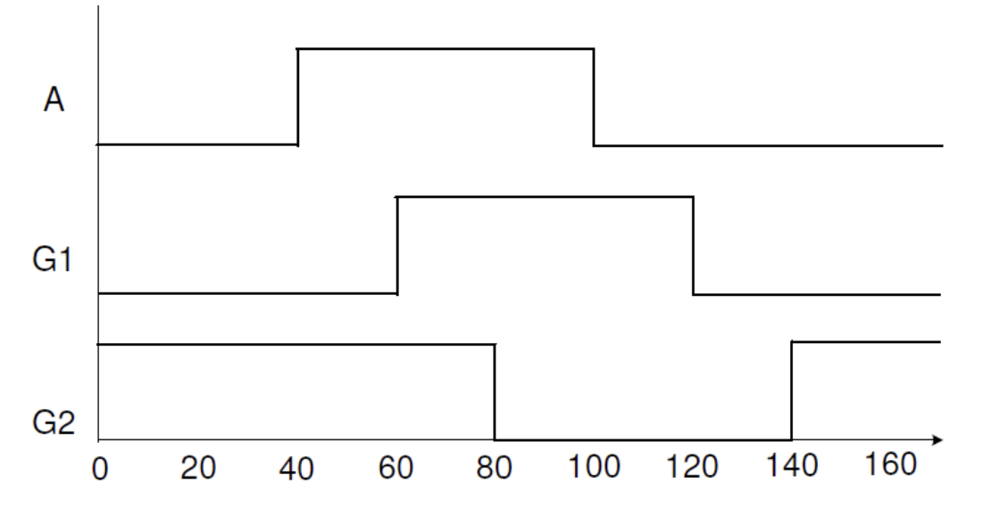
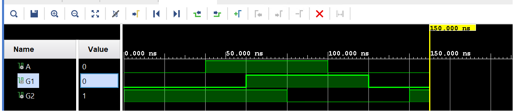

Lab4_Tasks, Functions, and Testbench
Introduction
Verilog lets you define sub-programs using tasks and functions. They are used to improve readability and exploit re-usability code. Functions are equivalent to combinatorial logic and cannot replace code containing event or delay control operators (as used in sequential logic). Tasks are more general than functions and may contain timing controls. Testbench is a program or model written in any language to exercise and verify the functional correctness of a hardware model during the simulation. Verilog is primarily a means for hardware modeling (simulation). The language contains various resources for formatting, reading, storing, allocating dynamically, comparing, and writing simulation data, including input stimulus and output results.
This lab will teach you how to write tasks, functions, and testbenches. You will learn about the components of a testbench, and language constructs available to verify the correctness of the underlying hardware model.
Tasks
A task is like a procedure that can execute common pieces of code from several different places in a model. A task can contain timing controls and call other tasks and functions (described in the next part). A task is defined, within a module definition, as:
task task_id;
[declarations]
procedure statements
endtask
A task can have zero, one, or more arguments. Values are passed to and from a task through arguments. The arguments can be input, output, or inout. Here is an example of a task definition and usage.
module HAS_TASK;
parameter MAXBITS = 8;
task REVERSE_BITS; // task definition starts here
input [MAXBITS - 1 : 0] DIN;
output [MAXBITS - 1 : 0] DOUT;
integer k;
begin
for (k=0; k < MAXBITS; k = k +1)
DOUT[MAXBITS-k] = DIN[k];
end
endtask // task definition ends here
reg [MAXBITS - 1] REG_X, NEW_REG;
always @ (REG_X)
REVERSE_BITS(REG_X,NEX_REG); // task being called
endmodule
Verilog HDL also provides a few system tasks. The system task name is preceded by a $. For example,
$display –Print the specified information to standard output with an end-of-line character.
e.g. $display(“At Simulation time %t, the x_var is %d”); will print x_var value in decimal format and time in the current time format.
$write –Similar to the display task, except it does not print an end-of-line character.
$monitor –Monitors the argument continuously. Whenever there is a change of value in an argument list, the entire argument list is displayed.
initial
$monitor("At %t, D= %d, CLK = %d", $time, D, CLK, "and Q is %b", Q);
Note that the argument list values are printed in the $display task whenever it is called, whereas in the $monitor task gets printed whenever the value of one of the arguments changes.
The system tasks are not synthesizable, i.e. they cannot be realized in real hardware.
Part4-1-1
Write a task called add_two_values which will take two 4-bit parameters, add them, and output a 4-bit sum and a carry. Write a module called add_two_values_task that calls the task with the operands received via input ports and outputs the result. Simulate the design with the provided testbench, add_two_values_tb.v, and verify the functionality.
Create and add the Verilog module, named add_two_values_task, which defines a task called add_two_values. The task will take two 4-bit parameters, add them, and output a 4-bit sum and a carry. The module will call the task with the operands received via input ports and outputs the result.
lab4_1_1.v
// Module for adding two 4-bit binary values using a task
module add_two_values_task(
input [3:0] a, // 4-bit input operand 'a'
input [3:0] b, // 4-bit input operand 'b'
output [3:0] sum, // 4-bit output for the sum of 'a' and 'b'
output carry // Output for the carry out of the addition
);
// Internal registers to hold the sum and carry produced by the task
// These are necessary since tasks cannot be directly assigned to output ports
reg [3:0] internal_sum;
reg internal_carry;
// Continuous assignments to link internal task outputs to module outputs
assign sum = internal_sum;
assign carry = internal_carry;
// Task for performing the addition of two 4-bit numbers
// It takes two 4-bit inputs and returns a 4-bit sum and a carryout
task add_two_values;
input [3:0] in_a, in_b; // Input operands for the addition
output [3:0] out_sum; // Output sum from the addition
output out_carry; // Output carry from the addition
begin
// Perform the addition using Verilog's built-in addition operator
// The curly braces '{}' are used for concatenation, combining carry and sum into one 5-bit result
{out_carry, out_sum} = in_a + in_b;
end
endtask
// Always block to execute the task with current inputs whenever they change
// This block is sensitive to any change in inputs 'a' and 'b'
always @ (*) begin
// Call the addition task with module inputs and assign results to internal registers
add_two_values(a, b, internal_sum, internal_carry);
end
endmodule
Simulate the design with the provided testbench, add_two_values_task_tb.v, and verify that the design works. Look for the messages displayed by the $display task in the simulator console window.
tb.v
// Testbench for the add_two_values_task module
module tb();
reg [3:0] ain, bin; // Declare 4-bit input registers for the module under test
wire cout; // Declare a single-bit output wire for the carry output
wire [3:0] sum; // Declare a 4-bit output wire for the sum output
integer k; // Declare an integer for the loop index in the test sequence
// Instantiate the Device Under Test (DUT) with named port mappings
add_two_values_task DUT (.a(ain), .b(bin), .carry(cout), .sum(sum));
// Initial block for the simulation
initial begin
// Set initial values for inputs
ain = 4'h6; bin = 4'ha; // Initialize 'ain' and 'bin' with hexadecimal values
// Display initial values and the outputs from DUT at the beginning of simulation
$display("ain=%b, bin=%b, cout=%b, sum=%b at time=%t", ain, bin, cout, sum, $time);
// Loop to change inputs and observe the output changes
for (k = 0; k < 5; k = k + 1) begin
#5 ain = ain + k; bin = bin + k; // Increment 'ain' and 'bin' by 'k' after every 5-time units
// Display updated values and the outputs after each change
$display("ain=%b, bin=%b, cout=%b, sum=%b at time=%t", ain, bin, cout, sum, $time);
end
// Print simulation completion message
$display("Simulation Done");
end
endmodule
We can run a Simulation to check the code by clicking the Run Simulation under the SIMULATION and choosing the first Run Behavioral Simulation.

Part4-1-2
Write a task called calc_even_parityto take an 8-bit number and compute and return parity. Write a module called calc_even_parity_task, which calls the task with the operand received via the input port and outputs the result. Use the provided testbench, calc_even_parity_task_tb.v, which displays the result using the $display system task. Simulate the design and verify the functionality.
lab4_1_2.v
// Module for calculating the even parity of an 8-bit input
module calc_even_parity_task (
input [7:0] data, // 8-bit input data for which to calculate parity
output parity // Output parity bit, high if the number of '1's in 'data' is even
);
// Internal register to hold the calculated parity
reg internal_parity;
// Continuous assignment to link the internal parity to the module's output
assign parity = internal_parity;
// Task to calculate even parity for an 8-bit input
task calc_even_parity;
input [7:0] data; // 8-bit input data for the task
output parity; // Output parity bit for the task
reg [7:0] temp; // Temporary register for processing
integer i; // Loop counter
begin
temp = data; // Copy input data to temporary register
parity = 1'b0; // Initialize parity to 0 (even)
// Loop through each bit of the input data
for (i = 0; i < 8; i = i + 1) begin
// XOR the current parity with each bit of the input data
// If there are an even number of '1's, parity will end up being '0'.
// If there are an odd number of '1's, parity will end up being '1'.
parity = parity ^ temp[i];
end
end
endtask
// Always block to calculate the parity whenever the input 'data' changes
always @ (data) begin
// Call the even parity calculation task with the input data
calc_even_parity(data, internal_parity);
end
endmodule
Now we can see the Schematic under the RTL ANALYSIS part like below:

tb.v
// Define testbench module
module tb();
reg [7:0] ain; // 8-bit input register for the module under test
wire parity; //Single-bit output wire for the module under test
integer k; // Loop variable for test iteration
// Instantiate the Device Under Test (DUT) with named port mappings
calc_even_parity_task DUT (.data(ain), .parity(parity));
// Initial block for simulation
initial begin
// Set initial value for input
ain = 8'ha8; // Initialize 'ain' with a hexadecimal value
// Display the initial input and resulting parity
$display("ain=%h, parity=%b, at time=%t", ain, parity, $time);
// Loop to modify input and observe changes in parity
for (k = 0; k < 5; k = k + 1) begin
#5 ain = ain + k; // Increment input 'ain' by 'k' every 5 time units
// Display the updated input and resulting parity after each increment
$display("ain=%h, parity=%b, at time=%t", ain, parity, $time);
end
// Indicate completion of the simulation
$display("Simulation Done");
end
endmodule
We can run a Simulation to check the code by clicking the Run Simulation under the SIMULATION and choosing the first Run Behavioral Simulation.

Functions
Functions are declared within a parent module with the keywords function and endfunction. Functions are used if all of the following conditions are true:
-
There are no delay, timing, or event control constructs that are present
-
It returns a single value
-
There is at least one input argument
-
There are no output or inout argument
-
There are no non-blocking assignments
In short, functions may implement only combinatorial behavior, i.e. they compute a value based on the present value of the input arguments and return a single value. They are used in the right-hand side of an assignment statement. Here is an example of a function definition and call.
module HAS_FUNCTION(X_IN, REV_X);
parameter MAXBITS = 8;
output reg [MAXBITS - 1 : 0] REV_X;
input [MAXBITS - 1 : 0] X_IN;
function [MAXBITS - 1 : 0] REVERSE_BITS; // function definition starts here
input [MAXBITS - 1 : 0] DIN;
integer k;
begin
for (k=0; k < MAXBITS; k = k +1)
REVERSE_BITS[MAXBITS-k] = DIN[k];
end
endfunction // function definition ends here
always @ (X_IN)
REV_X = REVERSE_BITS(X_IN); // function being called
endmodule
Part4-2-1
Write a function called add_two_values which will take two 4-bit parameters, add them and return a 5-bit sum. Write a module called add_two_values_function, with two 4-bit input ports and one 5-bit output port and call the function. Simulate the design with the provided testbench, add_two_values_function_tb.v, and verify the functionality.
Create and add a Verilog module called add_two_values_function, which defines a function called add_two_values that takes two 4-bit parameters, adds them, and returns a 5-bit sum. The module will have two 4-bit input ports and one 5-bit output port. It will call the function.
lab4_2_1.v
// Module for adding two 4-bit binary values using a Verilog function
module add_two_values_function (
input [3:0] a, // First 4-bit input operand
input [3:0] b, // Second 4-bit input operand
output [4:0] sum // 5-bit output for the sum (includes carry out)
);
// Function for adding two 4-bit values and returning a 5-bit result
// This function is a combinational logic block that computes the sum of two inputs
function [4:0] add_two_values;
input [3:0] a, b; // Declare two 4-bit input parameters for the function
begin
// Perform addition and return the result
// The function returns the sum of 'a' and 'b', where {carry, sum} is a 5-bit number
// 'a' and 'b' are zero-extended to 5 bits before adding to ensure correct carryout
add_two_values = a + b;
end
endfunction
// Continuous assignment statement to compute the sum
// Uses the add_two_values function to calculate the sum of 'a' and 'b'
// and assigns the result to the output 'sum'
assign sum = add_two_values(a, b);
endmodule
tb.v
// Testbench module to verify the add_two_values_function functionality
module tb();
reg [3:0] ain, bin; // Define 4-bit registers for inputs
wire [4:0] sum; // Define a 5-bit wire for the output, as the sum may overflow 4 bits
integer k; // Variable used for generating test cases in the for loop
// Instantiate the Device Under Test (DUT) with named port mapping
add_two_values_function DUT (.a(ain), .b(bin), .sum(sum));
// Begin the simulation block
initial begin
// Initialize inputs
ain = 4'h6; // Set initial value of 'ain' to 6 (4'b0110)
bin = 4'ha; // Set initial value of 'bin' to 10 (4'b1010)
// Display initial state of test variables and output
$display("ain=%b, bin=%b, sum=%b at time=%t", ain, bin, sum, $time);
// Generate additional test cases using a for loop
for (k = 0; k < 5; k = k + 1) begin
#5 ain = ain + k; bin = bin + k; // Increment 'ain' and 'bin' by 'k' every five time units
// Display updated values after each increment
$display("ain=%b, bin=%b, sum=%b at time=%t", ain, bin, sum, $time);
end
// Print a message once the simulation is complete
$display("Simulation Done");
end
endmodule
We can run a Simulation to check the code by clicking the Run Simulation under the SIMULATION and choosing the first Run Behavioral Simulation.

Part4-2-2
Write a task called calc_ones, which will take an 8-bit number and calculate and return several ones. Write a module called calc_ones_function with one 8-bit input port and one 3-bit output port and call the function. Simulate the design with the provided testbench, calc_ones_function_tb.v, and verify the functionality.
lab4_2_2.v
// Module for calculating the number of '1's in an 8-bit input using a Verilog function
module calc_ones_function(
input [7:0] data, // 8-bit input data to analyze
output [2:0] number_of_ones // Output representing the number of '1's in the input data
);
// Function to calculate the number of '1's in an 8-bit input
function [2:0] calc_ones;
input [7:0] a; // Local input variable for the function, holding the data to be analyzed
integer i; // Local variable for looping through the bits in 'a'
begin
calc_ones = 3'd0; // Initialize the count of '1's to 0
for (i = 0; i < 8; i = i + 1) begin // Loop through each bit of 'a'
// If the current bit is '1', increment the count of '1's
if (a[i] == 1'b1) begin
calc_ones = calc_ones + 1'b1;
end else begin
// If the current bit is not '1', maintain the current count
calc_ones = calc_ones;
end
end
end
endfunction
// Continuous assignment to assign the result of the calc_ones function
// to the module output 'number_of_ones'
// This assignment triggers whenever the input 'data' changes
assign number_of_ones = calc_ones(data);
endmodule
tb.v
// Testbench for the calc_ones_function module
module tb();
reg [7:0] ain; // 8-bit input for testing
wire [2:0] number_of_ones; // 3-bit output representing the number of ones in 'ain'
integer k; // Loop variable for generating different test vectors
// Instantiate the Device Under Test (DUT)
calc_ones_function DUT (.data(ain), .number_of_ones(number_of_ones));
// Begin simulation
initial begin
ain = 8'h4a; // Initialize 'ain' with a hexadecimal value
#5; // Wait 5 time units to ensure the DUT has processed the input
// Display the initial number of ones in 'ain'
$display("ain=%h, number_of_ones=%d at time=%t", ain, number_of_ones, $time);
// Change 'ain' several times to test different scenarios
for (k = 0; k < 5; k = k + 1) begin
#5 ain = ain + k; // Increment 'ain' by 'k' after waiting 5 time units
// Display the updated number of ones in 'ain' after each change
$display("ain=%h, number_of_ones=%d at time=%t", ain, number_of_ones, $time);
end
// Indicate completion of the simulation
$display("Simulation Done");
end
endmodule
We can run a Simulation to check the code by clicking the Run Simulation under the SIMULATION and choosing the first Run Behavioral Simulation.

Testbench
The major components of a testbench are:
-
`timescale declaration: Specify the time unit for all delays
-
Module, which defines the testbench top-level structure: A testbench usually does not have ports
-
Internal signals, which will drive the stimuli into the UUT and monitor the response from the UUT: Signal to drive and monitor
-
UUT instantiation
-
Stimuli generation: Write statements to create stimulus and procedural block
-
Response monitoring and comparing: Self-testing statements that will report values, errors, and warnings; $display, $write, $strobe, and/or $monitor system tasks
Verilog supports two types of delay modeling: (i) inertial and (ii) transport. The inertial delay is the delay that a gate or circuit may experience due to the physical nature of the gate or circuit. Depending on the technology used, it can be in ps or ns. The inertial delay is also used to determine if the input has an effect on the gate or circuit. If the input does not remain changed, at least for the initial delay then the input change is ignored. For example, an inertial delay of 5 ns means whenever the input changes, it should remain changed at least for 5 ns to be considered as changed otherwise the change is ignored (considered noise spike). The transport delay is the time-of-flight of a signal traveling a wire of a circuit. Here are some examples of transport and inertial delays:
wire #2 a_long_wire; // transport delay of 2 units is modeled
xor #1 M1(sum, a, b); // inertial delay of 1 unit exerted by xor gate
The initial statements are used in the testbench to generate stimuli and control simulation execution. Here is an example of it:
initial begin
#100 $finish; // run simulation for 100 units
end
initial begin
#10 a=0; b=0; // a, b zero after 10 units delay. Between 0 and 10, it is x
#10 b=1; // At 20, make b=1
#10 a=1; // at 30, make a=1
#10 b=0; // at 40, make b=0
end
Here is another example of the initial statement usage to generate a periodic signal called clock. It will generate a clock signal of 50% duty cycle with a period of 20 units.
reg clock;
parameter half_cycle = 10;
initial
begin
clock = 0;
forever
begin
#half_cycle clock = 1;
#half_cycle clock = 0;
end
end
Part4-3-1
Develop a testbench to verify the 4-bit ripple carry adder functionality. Use the ripple carry design (and its associated fulladder_dataflow module) you developed in Part 3-1 of Lab 2. Modify the design to include 2 units of inertial delay for every assignment statement in the design. Develop a testbench such that it computes expected output, compares the result, and displays the result as “Test Passed” or “Test Failed”
lab4_3_1.v
module lab4_3_1(
input a, // First input bit
input b, // Second input bit
input cin, // Input carry bit
output sum, // Sum output bit
output cout // Carry output bit
);
// Implement the sum and carry using dataflow modeling expressions.
// Sum (s) is the XOR of the three inputs.
assign #2 {cout,sum} = a + b + cin;
endmodule
tb.v
module tb_ripple_carry_adder;
// Testbench signals
reg a, b;
reg cin;
wire sum;
wire cout;
reg [2:0] expected; // Expected result includes sum and carry out
integer i, j;
// Instantiate the Device Under Test (DUT)
lab4_3_1 DUT (
.a(a),
.b(b),
.cin(cin),
.sum(sum),
.cout(cout)
);
// Test sequence
initial begin
// Initialize inputs
a = 0; b = 0; cin = 0;
// Run through all possible input combinations
for (i = 0; i < 2; i = i + 1) begin
for (j = 0; j < 2; j = j + 1) begin
a = i; b = j; cin = 0;
#10; // Wait for ripple to propagate, adjust time as needed
expected = i + j;
// Check result
if ({cout, sum} !== expected) begin
$display("Test Failed: a=%b, b=%b, cin=%b, sum=%b, cout=%b, Expected=%b",
a, b, cin, sum, cout, expected);
end else begin
$display("Test Passed: a=%b, b=%b, cin=%b, sum=%b, cout=%b",
a, b, cin, sum, cout);
end
#10; // Additional delay for clarity in simulation
end
end
$finish;
end
// Monitoring changes (optional for debug)
initial begin
$monitor("Time = %t: a = %b, b = %b, cin = %b, sum = %b, cout = %b",
$time, a, b, cin, sum, cout);
end
endmodule
We can see the simulation result as below:

Part4-3-2
Develop a testbench that generates the waveform shown below.

lab4_3_2.v
module waveform_generator(
output reg A,
output reg G1,
output reg G2
);
initial begin
// Initialize signals
A = 0; G1 = 0; G2 = 1;
// A waveform
#40 A = 1; // At 40ns
// G1 waveform
#20 G1 = 1; // At 60ns
#20 G2 = 0; // At 80ns
#20 A = 0; // At 100ns
// G2 waveform
#20 G1 = 0; // At 120ns
#20 G2 = 1; // At 140ns
end
endmodule
tb.v
`timescale 1ns / 1ps
module waveform_generator_tb;
// Instantiate the waveform generator outputs
wire A, G1, G2;
// Instantiate the waveform generator module
waveform_generator uut (
.A(A),
.G1(G1),
.G2(G2)
);
initial begin
// Initialize simulation
$dumpfile("waveform_generator_tb.vcd");
$dumpvars(0, waveform_generator_tb);
// Simulate for 150 ns
#150;
// End simulation
$finish;
end
endmodule

Conclusion
In this lab, you learned how to write functions, tasks, and testbenches. You also learned the differences between functions and tasks, both in their definitions and in usage. You saw how a function can be used in a testbench to compute expected output.